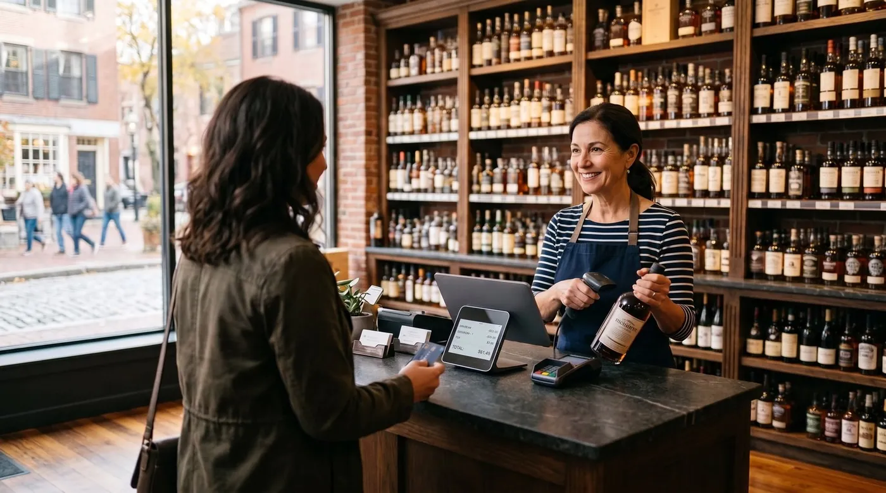

Liquor Store POS System: How to Choose in 2026
A liquor store lives and dies by two things the average retail register handles badly: a sprawling catalog of vintages, sizes and brands, and the legal duty to verify every buyer's age. Add case-break selling, deliveries and razor-thin margins on high volume, and a generic point-of-sale system quickly becomes a liability. This guide walks you through how to choose a liquor store POS that actually fits how a wine and spirits shop works, the features that matter, the compliance traps, and the real costs over a year.

Why liquor stores need a specialized POS
Most off-the-shelf retail systems were designed for shops that sell a few hundred clean, single-unit products. A wine and spirits store is a different animal. A typical store carries anywhere from a thousand to several thousand active SKUs, the same Cabernet in three vintages and two bottle sizes, a spirit in 50ml, 375ml, 750ml and 1.75L, beer sold as singles, six-packs and cases. Each of those is a distinct item with its own price, tax treatment and stock count.
Two guides that pick up where this one stops: what a POS really costs per year and candy store POS system. On a neighbouring subject, offline POS system.
On top of that catalog complexity sits a legal layer no clothing boutique ever worries about: you cannot sell to a minor, and in many places you must be able to prove you checked. The POS isn't just ringing up sales, it's part of your compliance posture. That combination of huge catalog, case-and-unit selling, age rules and high transaction volume is exactly why a purpose-built liquor store POS beats a general retail app, and why this decision deserves more than a glance at a pricing page.
The 7 things a liquor store POS must do
Before you compare brands, get clear on the jobs the system has to perform. For a wine and spirits shop, these seven matter more than any glossy feature list.
1. Handle a large SKU catalog without slowing down
Vintages, sizes, varietals and brands multiply fast. You want fast barcode lookup, clean product variants, and search that finds "the 2019 in magnum" in one keystroke, even with thousands of items loaded. Bonus points for a preloaded beverage catalog so you're not typing every label by hand.
2. Sell by case and by unit, with case-break
The system has to know that one case equals a fixed number of bottles, so selling a single unit decrements both counts under one SKU. Mix-and-match six-pack pricing and case discounts should be built in, not bolted on.
3. Verify age and log compliance
Where required, the POS should support ID scanning that reads a license barcode, calculates age automatically and records a timestamped check. (More on this below, and a caution about assuming it's included.)
4. Keep tight, real-time inventory
Low-stock alerts, par levels, purchase orders to your distributors, and counts that stay honest. On thin margins, shrinkage you can't see is profit you don't keep.
5. Check out fast at high volume
Friday and Saturday nights are a queue. Scanning, payment and receipt have to be quick, one-handed and reliable, and they have to keep working when the connection wobbles.
6. Support deliveries and account customers
Local delivery, phone orders, and house accounts for restaurants and regulars all need clean handling, including running tabs and customer credit you can settle later.
7. Reward repeat business
Loyalty and customer profiles turn a one-time buyer into a regular. In a category where the same customer comes back weekly, that compounds.
Age verification & compliance
This is the feature most likely to keep you out of trouble, and the one most likely to be misunderstood. In most US jurisdictions, selling alcohol to anyone under the legal age is a serious violation that can cost a fine, a license suspension, or worse. A capable liquor store POS reduces that risk in three ways:
- ID scanning: a barcode or magnetic-stripe reader pulls the date of birth from a driver's license or state ID, and the POS calculates age in real time, clearing or flagging the sale.
- Compliance logging: a timestamped record of every age check, which is exactly what you want if an inspection or dispute ever lands.
- Restricted-item controls: permissions and prompts that force the check before a restricted item can be sold, and limit who can override.
The smartest compliance question isn't "does the POS look modern?", it's "does it force the age check and keep an audit-grade log I can actually produce?"
One important caveat: built-in age verification is not a universal feature in every POS. Liquor-specialist platforms tend to ship it natively, while general-purpose systems may need an add-on, a third-party ID-scanner integration, or a manual prompt. If age verification is mandatory where you operate, treat it as a must-check criterion rather than an assumption, confirm on the official product page that the system supports your state's ID format and the kind of logging you need before you buy.
Inventory, SKUs & case-break selling
If age verification keeps you legal, inventory keeps you solvent. This is where a true wine and liquor store POS earns its place over a generic register.
Large catalogs and variants
A wine shop POS has to treat the same wine across vintages and bottle sizes as related-but-distinct items, so reporting tells you what's actually moving. Good systems let you organize by category, brand, region, varietal and size, then surface your fast movers and your dead stock at a glance.
Case-break / case-to-unit tracking
This is the make-or-break feature. When you receive a case of twelve and sell bottles individually, both case and unit counts must update automatically under one SKU. Without it, your numbers drift within days, reordering becomes a guess, and shrinkage hides in the gap between what you think you have and what's on the shelf.
Reordering and shrinkage control
Par levels and automated purchase orders keep popular SKUs in stock without overbuying slow movers. Tight, real-time counts also expose shrinkage, theft, breakage and miscounts, early, while you can still do something about it. On a category where margins are thin and volume is high, small leaks add up to real money over a year.
Deliveries, house accounts and loyalty
Many stores run local delivery and serve business customers on account. You'll want clean order handling, running tabs, and customer credit / house accounts you can settle on terms, plus loyalty to bring regulars back. These aren't luxuries in this sector; they're how the best stores defend their margins.
The real costs (including card-processing fees)
Liquor store POS pricing has two layers, and owners routinely focus on the wrong one.
Layer 1: software subscription
This ranges from $0 on genuine free plans to roughly $69-$165+ per month for full retail suites; some liquor-specialist platforms charge more, often bundled with a processor. It's the visible price, and usually the smaller one.
Layer 2: card-processing fees (the big one)
Every card sale carries a fee. In the US, in-person rates are typically around 2.3%-2.9% plus roughly 10-15 cents per transaction, depending on provider and plan; keyed-in and delivery payments cost more. Here's the catch many "all-in-one" liquor systems don't advertise loudly: several of them force you onto their own payment processor, so the commission is non-negotiable. For a high-volume liquor store, that processing bill over a year dwarfs any subscription.
To make it concrete: a store doing $60,000/month in card sales at 2.6% pays roughly $1,560/month in processing, far more than any software line. The difference between 2.4% and 2.9% on that volume is about $300/month, $3,600 a year, for the exact same sales. That's why the processing terms matter more than the headline price.
digabloPos
For wine and liquor store owners who want to start lean and stay in control of their costs, digabloPos is the strongest all-rounder. The base plan is free forever (no time limit, no credit card), and you're ringing up sales in minutes. Its standout traits for this sector: detailed inventory and SKU management built for big catalogs, true offline mode so a dropped connection never freezes a Friday-night queue, customer credit / house accounts for your delivery and business customers, and pay-as-you-grow modules so you only pay for depth when you need it. It's also ready for e-invoicing. Because age-verification rules vary by state, confirm ID-scanning support for your jurisdiction on the official site before you commit.
👍 Strengths
- Free forever, no credit card
- Detailed inventory & SKU management
- Offline mode with auto-sync
- Pay-as-you-grow modules
- Customer credit / house accounts
- Ready for e-invoicing
👎 Notes
- Newer brand than the US liquor-specialist incumbents
- Some advanced modules are paid
- Confirm age-verification / ID-scanning fits your state
- You arrange your own card reader/processor
Want to test it without spending a cent?
Set up a real, working register for your store in minutes. Free forever, no credit card.
Create my free registerComparison table
The kinds of systems liquor and wine store owners weigh up, side by side. Figures are approximate US pricing and change often, treat them as a starting point, not gospel, and verify on each official site.
| Criterion | digabloPos | Liquor-specialist suites | Square for Retail | Generic cloud POS |
|---|---|---|---|---|
| Free plan | Yes (forever) | Usually paid | App free | Varies |
| Software / month | $0 base | Often $$$ bundled | $0 / $89+ | $0-$165+ |
| Large SKU catalog | Yes | Yes | Good | Varies |
| Case-break selling | Yes (units) | Yes | Limited | Often no |
| Age verification | Check by region | Often native | Add-on | Add-on |
| Offline mode | Yes | Varies | Partial | Partial |
| Customer credit / accounts | Yes | Varies | Limited | Varies |
| Forced card commission | No | Often yes | ~2.6% + 10¢+ | Varies |
Checked June 2026 against official pricing pages and specialist comparison sites. "Liquor-specialist suites" and "generic cloud POS" are categories, not single products, capabilities and prices vary widely by vendor, plan, country and contract. Always confirm current rates and feature support (especially age verification for your state) on each official site before deciding.
How the options stack up
Liquor-specialist suites (the platforms built only for beer, wine and spirits) tend to nail case-break, large catalogs and native age verification out of the box, but they often come with paid software, a bundled payment processor and, sometimes, multi-year contracts. Square for Retail is easy to start with and handles a decent catalog, but case-break and age verification typically need workarounds or add-ons, and the model rests on a per-transaction fee. Generic cloud POS systems range widely; some can be bent to fit a liquor store, but you'll often be paying for retail features while patching the alcohol-specific gaps yourself. The right pick depends on your catalog size, your volume, and how much you value keeping 100% of your card sales.
5 mistakes to avoid
- Judging by the subscription alone. A "cheap" system that forces 2.9% on every card sale can cost far more than a free-base plan with cheaper processing. Always compare the 12-month total at your real volume.
- Assuming age verification is built in. It isn't always. If ID scanning and compliance logging are legally required where you operate, confirm support for your state's ID format before you buy.
- Skipping case-break. Without case-to-unit tracking, your inventory drifts within days and shrinkage hides. This is non-negotiable for a real liquor store POS.
- Accepting a forced processor. If the POS makes you use its payment processing, you can't shop your rate down. Prefer systems that let you keep 100% of card sales.
- Ignoring offline mode. One outage during a weekend rush, with a line out the door, will teach this lesson the expensive way. Check it works before you commit.
Ready to ring up your first sale?
Create a free register in minutes, no commitment, no credit card, and you keep 100% of your card sales.
Create my free registerFAQ
What is the best POS system for a liquor store in 2026?
There's no single winner for every store, it depends on your catalog size, volume and whether you deliver. The strongest all-round pick handles a large SKU catalog (vintages, sizes, brands), supports case and unit selling with case-break, has true offline mode, and lets you keep 100% of your card sales instead of a forced commission. If age verification is mandatory in your state, confirm the POS supports ID scanning before committing.
Does a liquor store POS need age verification?
In most US jurisdictions, yes, selling alcohol requires verifying the buyer is of legal age. Many liquor-focused systems add ID/barcode scanning that reads a license and calculates age automatically, plus a timestamped compliance log. Age verification isn't a universal default in every POS, so treat it as a must-check criterion and confirm it on the official site before buying.
What is case-break selling and why does it matter?
Case-break (or case-to-unit) selling means the POS knows a case contains a fixed number of bottles, so selling one unit reduces both case and unit stock under a single SKU. Without it, inventory drifts out of sync, reordering becomes guesswork and shrinkage hides in the gap. It's one of the features that separates a true liquor store POS from a generic retail register.
How much does a liquor store POS system cost per month?
Software ranges from $0 on genuine free plans to roughly $69-$165+ per month for full retail suites, and some liquor-specialist platforms charge more. The bigger cost is usually card processing, typically around 2.3%-2.9% plus about 10-15 cents per in-person transaction. Add 12 months of processing to the sticker price to see the true cost.
Can a liquor store POS work offline?
The best ones do. With true offline mode you keep ringing up sales even if the internet drops, and data syncs automatically when you reconnect, important for high-volume stores where a checkout freeze during a busy rush costs real money.
Official sources
Prices and features move often. Here is the vendors' own documentation, so you can check for yourself.
- Square Support Center : what the vendor documents itself about features and pricing.